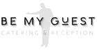
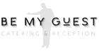

Emnesite

På tema 3 skulle vi udvikle et “emnesite”, hvor vi selv valgte et emne og byggede en
hjemmeside omkring det. Vi arbejdede med hele designprocessen – fra idé og
konceptudvikling til visuelle overvejelser som moodboards, designassociationer og
brugertests. Gennem dette lærte vi, hvor vigtigt det er at planlægge og teste designet,
før man bygger det. Derudover trak vi på den viden, vi havde opnået under
studiestartsprøven, og arbejdede selvstændigt med at opbygge strukturen i HTML ved hjælp
af bl.a. grids, flexbox og CSS. Projektet gav os en god forståelse for både design og
teknisk opbygning af en funktionel og æstetisk hjemmeside.

 
